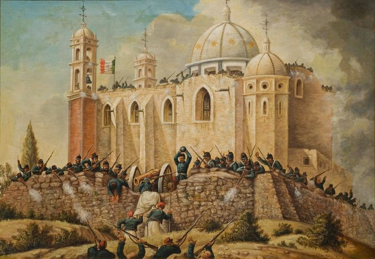
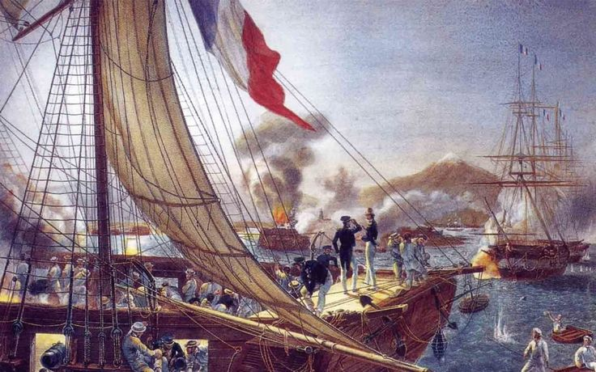

Buscaba la mayor participación ciudadana, el respeto a la diversidad regional y el equilibrio de poder
Conservador
Con mayor rapidez en la toma de decisiones y control uniforme en todo el país
Invasión de Estados Unidos (1846-1848)

Comenzó debido a la extensión territorial estadounidense
En esa época Estados Unidos promovía la idea del Destino Manifiesto, doctrina que afirmaba que ese país tenía el derecho
y la misión de expandirse las tensiones entre ambos países
En 1845 Estados Unidos anexó Texas, territorio que México consideraba propio, lo que incrementó las tensiones
entre ambos países
El conflicto armado inició oficialmente en 1846
El episodio más recordado en la Batalla de Chapultepec. Donde un grupo de jóvenes cadetes del colegio militar conocidos
como los Niños Héroes, defendieron el Castillo de Chapultepec frente a las tropas estadounidenses
La batalla concluyó en 1848 con la firma del Tratado de Guadalupe Hidalgo
En consecuencia, México perdió aproximadamente el 55% de su territorio, incluyendo los actuales estados de
California
Nuevo México
Arizona
Nevada
Utah
Colorado
Wyoming
Antecedentes
Debido a una crisis económica, el presidente Benito Juárez anunció la suspensión temporal del pago de
la deuda externa a varios países
Inglaterra y España llegaron a un acuerdo, pero Francia y Estados Unidos aprovecharon para intentar establecer un imperio en territorio mexicano
La Intervención Francesa (1862-1867)

El emperador francés Napoleón III buscaba aumentar la influencia de Francia en América y encontró el apoyo de un grupo de
conservadores mexicanos
En 1862, las tropas francesas intentaron tomar la ciudad de Puebla, pero fueron derrotadas el 05 de Mayo por el ejército liderado
por Ignacio Zaragoza
Sin embargo, Francia envió un ejército más grande y logró ocupar la Ciudad de México
En 1864 llegó al país Maximiliano de Habsburgo, quien asumió como emperador de México junto con su esposa Carlota,
impulsando reformas liberales, contando únicamente con el apoyo del ejército
Mientras tanto, Benito Juárez mantuvo un gobierno republicano itinerante y organizó la resistencia
El gobierno brindó apoyo diplomático y político a Juárez, exigiendo el retiro de las tropas francesas
Finalmente, Francia retiró su ejército en 1867 y Maximiliano fue capturado en Querétaro y fusilado; restaurándose la
República con el regreso de Benito Juárez a la Ciudad de México
Recursos complementarios
Video explicativo
En este video se explica el tema de manera sencilla para reforzar lo aprendido.
Canción relacionada
Esta es una canción relacionada con los acontecimientos o ideas principales del tema.